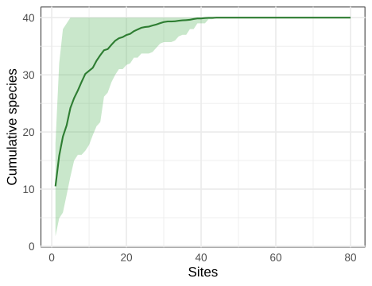
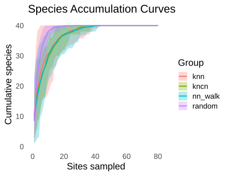
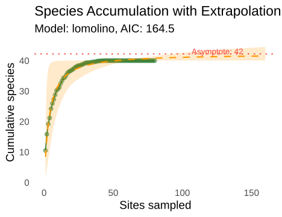
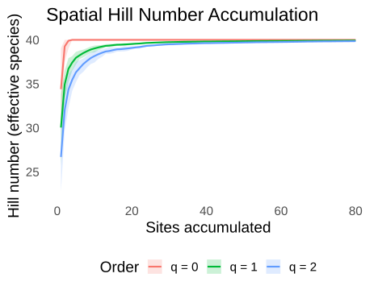
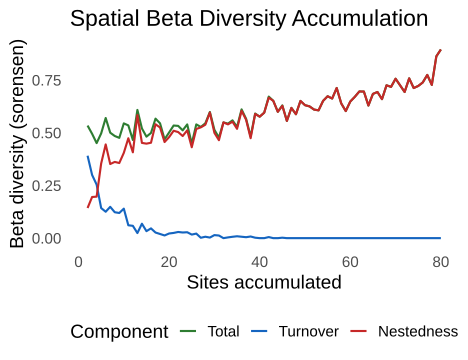
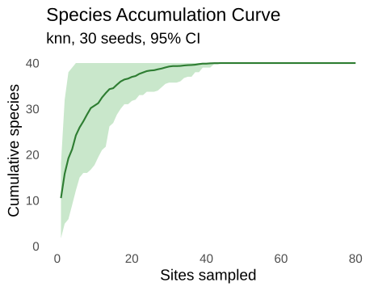

Getting Started with spacc
Gilles Colling
2026-10-10
Source:vignettes/quickstart.Rmd
quickstart.RmdInstallation
install.packages("spacc") # CRAN
install.packages("pak") # development version
pak::pak("gcol33/spacc")Introduction
A species accumulation curve (SAC) records how many distinct species have been seen after \(k\) sampling units have been examined. The classical version draws those units in random order and averages over many random orders. spacc draws them in spatial order instead: starting from a focal site, it visits the nearest unvisited site next, then the nearest to that, and so on. The curve that results answers a different question. The random curve asks how richness grows with effort; the spatial curve asks how richness grows with area as a survey spreads outward from a point.
The two curves separate whenever species are spatially aggregated, which is the usual case in ecology. Neighbouring sites share species, so the spatial curve climbs slowly at first and the across-start variability is large. The random curve ignores geography, mixes distant communities into each step, and climbs faster. The gap between them is itself a measure of spatial turnover. A spatial curve that tracks the random curve closely signals a community with little spatial structure; a spatial curve that lags far behind signals strong distance decay in composition.
The choice of order matters because most field surveys are not random. Plots fall along a transect, a road, an elevation gradient, or a grid, and nearby plots are sampled together. A random SAC quietly assumes the sampling units are exchangeable, which inflates the apparent rate of discovery when they are not. The spatial curve keeps the geography that the random average throws away, so its slope reflects how fast new species appear as a real survey expands its footprint rather than how fast they appear in an idealised draw from the regional pool. For planning a survey, the spatial slope is the relevant one: it predicts the marginal return of visiting one more nearby site.
spacc computes these curves with a C++ backend, runs many starting points in parallel, and reports across-start quantiles as confidence bounds. The parallelism matters in practice because the uncertainty here comes from varying the starting point, not from a formula. Each seed is an independent walk, and the spread of the seed curves at a given step is the sampling distribution of richness at that effort. Computing dozens of walks is the cost of an honest interval, and a compiled, threaded backend makes that cost small enough to ignore on datasets up to thousands of sites.
The same accumulation machinery feeds a family of downstream analyses: Hill numbers, beta-diversity partitioning, coverage standardization, phylogenetic and functional diversity, richness estimators, and conservation metrics. Each one reuses the spatial walk and replaces the quantity counted at each step. Where the basic curve counts species, the Hill version counts effective species, the beta version measures compositional change, and the coverage version tracks sampling completeness. This vignette walks the front door of that pipeline, then takes one short detour into each downstream branch. Reach for spacc when sites carry coordinates and the spatial arrangement of sampling is part of the question, not a nuisance to average away.
The basic workflow
The package ships no built-in datasets, so the examples simulate communities with known structure. Working with simulated data has a payoff: the ground truth is known, so the curve’s behaviour can be checked against what was put in. Here 40 species are scattered across 80 sites, and each species clusters around its own centre rather than spreading evenly. That clustering is what makes the spatial and random curves diverge later on.
Each species is placed at a random centre, and its occurrence
probability decays with squared distance from that centre. The kernel
\(p = \exp(-\alpha\,r^2)\) gives each
species a Gaussian-shaped range, where \(r\) is the distance from a site to the
species centre and \(\alpha\) is the
decay constant. The decay constant 0.001 sets the patch
width: at a separation of about 32 units the kernel drops to \(1/e\), so a species occupies a blob roughly
60 units across in a 100-by-100 arena. Smaller constants give wider
ranges, larger constants give tighter endemics. The
rbinom() draw then turns that probability into a presence
or absence at each site, so a site near a species centre almost always
records it and a site far away rarely does.
library(spacc)
set.seed(42)
n_sites <- 80; n_species <- 40
coords <- data.frame(x = runif(n_sites, 0, 100), y = runif(n_sites, 0, 100))
species <- matrix(0L, n_sites, n_species) # presence/absence, spatially clustered
for (sp in seq_len(n_species)) {
cx <- runif(1, 20, 80); cy <- runif(1, 20, 80)
prob <- exp(-0.001 * ((coords$x - cx)^2 + (coords$y - cy)^2))
species[, sp] <- rbinom(n_sites, 1, prob)
}
colnames(species) <- paste0("sp", seq_len(n_species))The input is a site-by-species matrix: one row per site, one column
per species, holding presence/absence or abundance. The coordinates come
as a data frame with columns x and y in the
same row order. spacc joins the two by position, so the row order of
species and coords must match. A common source
of silent error is sorting or filtering one table without the other,
which scrambles the pairing; building both from the same source in one
step, as above, avoids it. Abundance matrices are accepted directly, and
the distance-based richness curves binarise them internally, while the
Hill and coverage functions keep the counts because they need them.
spacc() is the core function. It samples
n_seeds random starting sites, runs a k-nearest-neighbour
accumulation from each, and stacks the resulting curves into a
matrix.
sac <- spacc(species, coords, n_seeds = 30, method = "knn", progress = FALSE)
sac
#> spacc: 80 sites, 40 species, 30 seeds (knn)The print line reports the number of sites, the total species pool,
the number of seeds, and the method. The object itself is a list. Its
central element is curves, a matrix with one row per seed
and one column per accumulation step. Entry \((s, k)\) is the cumulative species count
for seed \(s\) after \(k\) sites. Every seed walks all the way out
to the full site set, so the last column is identical across seeds and
equals observed total richness. The early columns are where seeds
disagree, because where a walk begins decides which patch it explores
first.
This matrix layout is the heart of the package. Rather than store a single averaged curve, spacc keeps every seed’s walk, so any summary statistic, quantile, or comparison can be computed afterward from the raw replicates. A 30-seed run on 80 sites holds a 30-by-80 matrix; the rows are the replicates and the columns are the effort axis. Reading down a column gives the across-seed distribution of richness at that effort, which is exactly what the confidence ribbon plots.
dim(sac$curves)
#> [1] 30 80
sac$curves[1:3, 1:6]
#> [,1] [,2] [,3] [,4] [,5] [,6]
#> [1,] 15 20 21 22 29 31
#> [2,] 3 6 11 11 14 17
#> [3,] 7 12 13 19 20 21summary() condenses the matrix into per-step statistics.
The mean curve is the column mean; the confidence bounds are across-seed
quantiles, not parametric standard errors. Using quantiles rather than a
normal-theory interval matters because the seed curves are bounded below
by zero and above by total richness, so their distribution at a given
step is skewed near both ends. A quantile band respects those bounds,
while a mean-plus-or-minus interval can stray outside them. With
ci_level = 0.95 the bounds are the 2.5th and 97.5th
percentiles of the seed curves at each step, and lowering the level
narrows the band to the chosen central fraction of seeds.
summary(sac)
#> Spatial Species Accumulation Curve
#> ------------------------------------
#> Method: knn
#> Seeds: 30
#> Sites: 80
#> Total species: 40
#> Final species: 40.0 (95% CI: 40.0 - 40.0)
#> Saturation (90%): 18 sites
#> CV at midpoint: 0.9%The saturation point is the first step where the mean curve reaches
90% of its final value, a quick read on how much area must be surveyed
to capture most of the regional pool. A saturation point at 25 sites out
of 80 means most species turn up early and the rest of the survey adds
little; a saturation point near the end means richness keeps climbing
right up to the last site, a warning that the regional pool is
undersampled. The threshold is adjustable through
saturation_threshold. The CV at midpoint divides the
across-seed standard deviation by the mean halfway along the curve; a
large value flags that richness depends strongly on where sampling
starts, which is the spatial structure showing through in the spread of
the seeds.
The plot() method draws the mean curve with a shaded
ribbon between the quantile bounds.
plot(sac)
Spatial species accumulation curve with 95% confidence ribbon.
The grey ribbon shows variability across starting points. A wide
ribbon means richness depends on where you start; a narrow one means the
community looks much the same wherever a survey begins. The ribbon
narrows toward the right because every walk converges on the same full
site set, and it is widest in the middle, where the seeds have diverged
into different patches but have not yet reconverged. The plot method
takes ci = FALSE to drop the ribbon,
show_seeds = TRUE to draw the individual walks behind the
mean, and ci_level to change the quantile band, so the same
object yields a clean summary figure or a diagnostic of the raw spread
depending on the audience.
as.data.frame() returns the summary as a tidy table, one
row per step, with the mean, the quantile bounds, and the across-seed
standard deviation. This is the form to pass to a custom ggplot or to
export. The built-in plot covers the common case, but the table is there
for anything beyond it: overlaying several curves with bespoke styling,
annotating a threshold, faceting by a grouping variable, or dropping the
figure into a report theme. Keeping the summary and the plot in step
means a custom figure never drifts from what summary()
reports.
sac_df <- as.data.frame(sac)
head(sac_df)
#> sites mean lower upper sd
#> 1 1 10.50000 1.725 18 5.230877
#> 2 2 15.83333 4.900 32 8.292428
#> 3 3 19.20000 5.900 38 9.278823
#> 4 4 21.16667 9.000 39 8.952300
#> 5 5 24.20000 12.175 40 8.735185
#> 6 6 25.93333 15.000 40 8.115262
tail(sac_df, 3)
#> sites mean lower upper sd
#> 78 78 40 40 40 0
#> 79 79 40 40 40 0
#> 80 80 40 40 40 0A custom plot reads straight from that table. Note the transparent backgrounds so the figure sits cleanly on the page.
library(ggplot2)
ggplot(sac_df, aes(sites, mean)) +
geom_ribbon(aes(ymin = lower, ymax = upper), alpha = 0.3, fill = "#4CAF50") +
geom_line(linewidth = 1, colour = "#2E7D32") +
labs(x = "Sites", y = "Cumulative species") +
theme_minimal(base_size = 17) +
theme(panel.background = element_rect(fill = "transparent"),
plot.background = element_rect(fill = "transparent"))
Manual ggplot from the summary data frame.
Accumulation methods
The default "knn" method samples a continuous focal
point and accumulates sites by increasing distance from that fixed
point. "kncn" repeatedly selects the site closest to the
centroid of the selected set. "nn_walk" repeatedly selects
the closest unvisited site to the current site. "random"
gives the classical geography-free effort curve.
"gaussian", "cone", and
"collector" provide probabilistic, directional, and
data-order sequences.
The three spatial rules represent different geometries.
knn expands around a fixed focus, kncn updates
a compact centroid-based footprint, and nn_walk follows a
recursive path through local neighbours. The spatial-tree backend is
available for kncn and nn_walk on large
datasets. Fixed-focus knn sorts distances from each focal
point directly.
sac_kncn <- spacc(species, coords, n_seeds = 30, method = "kncn", progress = FALSE)
sac_walk <- spacc(species, coords, n_seeds = 30, method = "nn_walk", progress = FALSE)
sac_rand <- spacc(species, coords, n_seeds = 30, method = "random", progress = FALSE)The c() method combines several spacc
objects into one grouped object, which plot() overlays. The
names supplied become the legend labels.

Fixed-focus kNN, kNCN, nearest-neighbour walk, and random accumulation.
The curves show how the selected spatial rule changes the sequence in which communities enter the cumulative sample.
Custom accumulation order
When the sequence should follow something other than distance, pass
it through order: a permutation of site indices for a
single curve, or a matrix with one ordering per row to get bounds across
orderings. Supplying order bypasses the distance methods
and the seed sampling, accumulating sites in exactly the order given.
Useful drivers include an elevation rank, a survey date, or a transect
position.
# Accumulate west-to-east (e.g. an elevation rank or survey date)
sweep_order <- order(coords$x)
sac_order <- spacc(species, coords, order = sweep_order, progress = FALSE)
sac_order
#> spacc: 80 sites, 40 species, 1 seeds (user)The method label switches to user, and because a single
ordering yields a single curve there is no ribbon to draw. To get
uncertainty from user-defined orders, stack several plausible sequences
as rows of a matrix; each row then behaves like a seed, and the
across-row quantiles form the ribbon. A west-to-east sweep like the one
above traces how richness builds along a gradient, which differs from a
nearest-neighbour walk whenever the gradient itself structures the
community. The ordering must be a permutation of all site indices, each
site appearing exactly once, so the walk visits the whole dataset.
Comparing curves
Two curves often need a formal test rather than an eyeball comparison
of overlapping ribbons. compare() provides one. The default
permutation test pools the seed curves from both objects, repeatedly
splits the pool at random into two groups of the original sizes, and
records the difference in area under the mean curve for each split. The
\(p\)-value is the fraction of permuted
differences whose magnitude matches or exceeds the observed one. The
logic is the standard one for a label-shuffle test: if the two objects
really come from the same process, then which curve belongs to which
group is arbitrary, and the observed difference should look ordinary
among the shuffled differences. A difference that sits far out in the
shuffled distribution is evidence the two curves are genuinely
distinct.
sac_a <- spacc(species[, 1:20], coords, n_seeds = 30, progress = FALSE)
sac_b <- spacc(species[, 21:40], coords, n_seeds = 30, progress = FALSE)
comp <- compare(sac_a, sac_b, method = "permutation", n_perm = 199)
comp
#> Comparison: sac_a vs sac_b
#> ----------------------------------------
#> Method: permutation (n=199)
#> AUC difference: -3.2 (p = 0.819)
#> Saturation: sac_a at 17 sites, sac_b at 16 sitesThe printout names the two objects, gives the area-under-curve
difference, the \(p\)-value with
significance stars, and the saturation point of each. A small \(p\)-value means the two curves accumulate
species at genuinely different rates rather than differing by chance
across starting points. Here the two halves of the species pool were
simulated the same way, so a non-significant result is the expected
outcome. Setting normalize = TRUE rescales each curve to
its own final value first, which compares the shape of
accumulation rather than absolute counts; that isolates differences in
how fast richness saturates from differences in how much richness there
is. The as.data.frame() method on a comparison returns a
one-row table with both areas, the difference, both saturation points,
and the \(p\)-value.
as.data.frame(comp)
#> comparison auc_x auc_y auc_diff saturation_x saturation_y
#> 1 sac_a vs sac_b 1488.6 1491.833 -3.233333 17 16
#> saturation_diff p_value method
#> 1 1 0.8190955 permutationExtrapolation and prediction
A finished SAC stops at the sites in hand, but the regional pool
usually holds more. extrapolate() fits an asymptotic model
to the mean curve and reads off the asymptote as an estimate of total
richness. Several model forms are available; the Lomolino sigmoid and
the Michaelis-Menten hyperbola are common starting choices. Each model
is a parametric curve that rises and flattens, and each is fit by
nonlinear least squares to the mean accumulation curve. The asymptote is
the value the curve approaches as effort grows without bound, so it
stands in for the richness a complete survey would record. The models
differ in how sharply they bend and how fast they flatten, which is why
one form can fit a dataset well and another poorly.
fit <- extrapolate(sac, model = "lomolino")
fit
#> Extrapolation: lomolino
#> --------------------------------------
#> Estimated asymptote: 42.2 species
#> 95% CI (bootstrap): 40.0 - 50.2
#> Observed: 40.0 species (95% of estimated)
#> AIC: 164.5 RMSE: 0.64 (1.7% of mean)
#> Reliable to ~200 sites (2.5x sampled effort of 80)
#> --------------------------------------
#> Nonparametric: chao2 = 40.0 iChao2 = 40.0
#> (prefer these for calibrated total-richness intervals; see ?extrapolate)The asymptote is the model’s ceiling, with a confidence interval from
the nonlinear fit and the AIC for model comparison. The final line
reports observed richness as a percentage of the estimated total, a
direct read on sampling completeness: a survey at 95% of its estimated
asymptote is nearly done, while one at 60% has substantial discovery
left. Read that percentage alongside the confidence interval, because a
tight interval at high completeness is trustworthy while a wide interval
at low completeness warns that the asymptote is extrapolated rather than
observed. The plot() method shows the observed curve, the
fitted curve extended past the data, and the asymptote as a horizontal
line, which makes the extrapolated portion visually distinct from the
part backed by data.
plot(fit)
Fitted Lomolino curve with asymptote estimate.
predict() evaluates the fitted model at any effort
level, including effort beyond the observed range, which is the point of
fitting a model in the first place. It answers questions of the form
“how many species would a survey of \(n\) sites be expected to record”, whether
\(n\) is inside the data or past it.
Note the distinction between two predict methods in the package: calling
predict() on the spacc object interpolates the
observed curve directly with no model, while calling it on the fitted
spacc_fit object evaluates the model and so can extend past
the data. Use the first to read off observed behaviour, the second to
forecast.
predict(fit, n = c(40, 80, 160, 320))
#> Warning: Predicting beyond ~2.5x the sampled effort (max sampled = 80 sites);
#> extrapolation is unreliable this far out.
#> [1] 39.30278 40.78402 41.52269 41.88073coef() returns the fitted parameters, and
confint() returns their intervals. In every model here the
parameter a is the asymptote, so its interval is the
interval on estimated total richness.
coef(fit)
#> a b c
#> 42.206105 2.953732 3.608436
confint(fit, parm = "a")
#> 2.5 % 97.5 %
#> a 40.04056 50.19255To weigh several model forms at once rather than committing to one,
compareModels() fits a set of them and ranks them by AIC
with Akaike weights. The model with the largest weight is the
best-supported fit for the data at hand. The Akaike weight of a model is
its relative likelihood among the candidates, normalised to sum to one
across the set, so a weight of 0.7 means that model carries most of the
support. When two models share the weight roughly evenly, their
asymptotes bracket a plausible range and neither should be reported
alone. Picking a single asymptote from a clear winner is safer than
averaging across forms that disagree.
cm <- compareModels(sac, models = c("michaelis-menten", "lomolino", "asymptotic"))
cm
#> SAR Model Comparison
#> ------------------------------
#> lomolino AIC: 164.5 dAIC: 0.0 w: 0.941 S_max: 42.2 *
#> michaelis-menten AIC: 170.0 dAIC: 5.5 w: 0.059 S_max: 42.8
#> asymptotic AIC: 251.0 dAIC: 86.6 w: 0.000 S_max: 39.6
#> ------------------------------
#> Best model: lomolinoPre-computing distances
The distance-based methods build a pairwise distance matrix before
they walk. When several analyses run on the same sites, computing that
matrix once and reusing it skips the repeated work.
distances() returns a spacc_dist object that
any spacc function accepts in place of a coordinate data frame.
d <- distances(coords, method = "euclidean")
d
#> spacc distance matrix: 80 x 80
#> Method: euclidean
#> Distance range: 1.2 - 127.2
sac1 <- spacc(species[, 1:20], d, n_seeds = 30, progress = FALSE)
sac2 <- spacc(species[, 21:40], d, n_seeds = 30, progress = FALSE)The same d drives both calls above, and it can feed
spaccHill(), spaccBeta(),
spaccCoverage(), and the rest. The spacc_dist
object carries the coordinates as an attribute, so the downstream
functions still know where each site sits. Reusing it is purely a speed
gain; the results are identical to passing the raw coordinates each
time, because the same matrix would be rebuilt internally.
For projected coordinates (UTM and similar) Euclidean distance is
correct, because the projection has already flattened the curvature of
the Earth into a plane where straight-line distance is meaningful. For
longitude/latitude pass an sf object to
distances(); it auto-detects the geographic CRS and
switches to accurate geodesic distance, which follows the curve of the
globe. Using Euclidean distance on raw lat/lon degrees is a common
mistake that distorts distances badly away from the equator, so the
auto-detection guards against it.
Taste tests
The sections below each call one downstream function once, on the same simulated data, to show what it returns. Each links to the vignette that covers it in depth.
Hill numbers
Raw richness (\(q = 0\)) counts
every species equally, so a single record of a rare species weighs as
much as a thousand records of a common one. Hill numbers tune that
weighting through the order \(q\),
which controls how much rare species count toward the total. At \(q = 0\) every present species contributes
one regardless of abundance; as \(q\)
rises, rare species fade and abundant ones dominate the index. At \(q = 1\) the index is the exponential of
Shannon entropy (effective number of common species); at \(q = 2\) it is the inverse Simpson
concentration (effective number of dominant species). All three share a
unit, the effective number of species, so a community with \(q=1\) diversity of 12 is as diverse, in the
common-species sense, as 12 equally abundant species. That shared unit
is what makes the orders comparable on one plot.
spaccHill() accumulates all three along the spatial walk.
The example uses abundances, since the weighting only bites when counts
vary.
set.seed(7)
abund <- matrix(rpois(n_sites * n_species, lambda = 2), n_sites, n_species)
colnames(abund) <- colnames(species)
hill <- spaccHill(abund, coords, q = c(0, 1, 2), n_seeds = 20, progress = FALSE)
tail(as.data.frame(hill), 3)
#> q sites mean lower upper sd
#> 238 2 78 39.84461 39.83415 39.85251 0.007587100
#> 239 2 79 39.84802 39.84522 39.85350 0.003270283
#> 240 2 80 39.85458 39.85458 39.85458 0.000000000
plot(hill)
Hill number accumulation at q = 0, 1, 2.
The three curves fan out: \(q = 0\) sits highest because it counts rare species, while \(q = 2\) sits lowest because it discounts them. The gap between the curves measures how uneven the community is. See Diversity for the full Hill framework, including phylogenetic and functional analogues.
Beta diversity
As a spatial walk admits each new site, some of its species are
already in the accumulated pool and some are new.
spaccBeta() tracks the dissimilarity between the new site
and the running pool and splits it into two parts following Baselga
(2010): turnover (species replaced by different species) and nestedness
(species simply absent because the new site holds a subset). Their sum
is total beta diversity.
beta <- spaccBeta(species, coords, n_seeds = 20, index = "sorensen", progress = FALSE)
tail(as.data.frame(beta), 3)
#> sites beta_total beta_turnover beta_nestedness beta_total_sd
#> 77 77 0.7273746 0 0.7273746 0.12564740
#> 78 78 0.8628698 0 0.8628698 0.09183220
#> 79 79 0.8953648 0 0.8953648 0.06075466
#> beta_turnover_sd beta_nestedness_sd
#> 77 0 0.12564740
#> 78 0 0.09183220
#> 79 0 0.06075466
plot(beta)
Beta diversity partitioned into turnover and nestedness.
When turnover dominates, the region is a mosaic of distinct communities, each holding species the others lack; when nestedness dominates, poorer sites are orderly subsets of richer ones and the contrast is one of richness rather than identity. The distinction guides conservation: a turnover-driven region needs many reserves to capture its species, while a nested region can be protected by securing its richest sites. Diversity covers the partition and its Hill-number counterpart in detail.
Coverage standardization
Comparing richness across sites with unequal sampling is unfair: more
individuals find more species, so the better-sampled site looks richer
even when the underlying communities are identical. Coverage
standardization fixes the comparison at equal completeness instead of
equal effort. Sample coverage is the estimated fraction of the
community’s total abundance that the observed species represent, so a
coverage of 0.9 means the recorded species account for 90% of the
individuals out there and the missing 10% sits among species not yet
seen. Standardising to a common coverage compares communities at the
same point on their respective discovery curves, which is fairer than
standardising to a common count of individuals when the communities
differ in evenness. spaccCoverage() tracks richness,
individuals, and coverage together along the walk.
cov <- spaccCoverage(abund, coords, n_seeds = 20, coverage = "chiu", progress = FALSE)
tail(as.data.frame(cov), 3)
#> sites richness individuals coverage richness_sd coverage_sd
#> 78 78 40 6222.65 1 0 0
#> 79 79 40 6302.85 1 0 0
#> 80 80 40 6388.00 1 0 0interpolateCoverage() then reads the richness reached at
chosen coverage targets, the value used for fair cross-site
comparison.
ic <- interpolateCoverage(cov, target = c(0.90, 0.95))
colMeans(ic)
#> C90 C95
#> 39.00984 39.21316The Chiu (2023) estimator used here is built for plot-based spatial data, where sites rather than individuals are the sampling units. See Rarefaction and standardization for the choice between coverage- and size-based methods.
Richness estimators
Non-parametric estimators infer the unseen part of the pool from the frequency of the rarest species. The intuition is that undetected species leave a trace in the detected-but-barely ones: a community with many species seen exactly once very likely hides more that were seen zero times, while a community whose rarest species are all well represented is probably close to fully sampled. Chao1 works from abundances and leans on singletons and doubletons (species seen once or twice in total); Chao2 works from incidence and leans on uniques and duplicates (species found at one or two sites). The two are analogues built for the two kinds of data, and they often disagree slightly because abundance and incidence carry different information about rarity. Both return a point estimate, a standard error, and a confidence interval.
chao1(abund)
#> Richness Estimator: chao1
#> --------------------------------
#> Observed species (S_obs): 40
#> Estimated richness: 40.0
#> Standard error: 0.0
#> 95% CI: [40.0, 40.0]
chao2(species)
#> Richness Estimator: chao2
#> --------------------------------
#> Observed species (S_obs): 40
#> Estimated richness: 40.0
#> Standard error: 0.0
#> 95% CI: [40.0, 40.0]The estimate exceeds observed richness by an amount that grows with
the number of rare species: many singletons imply many more species
still unseen. Compare across estimators with
as.data.frame().
rbind(
as.data.frame(chao1(abund)),
as.data.frame(chao2(species))
)
#> estimator S_obs estimate se lower upper
#> 1 chao1 40 40 0 40 40
#> 2 chao2 40 40 0 40 40Richness estimation walks through the full estimator family and the completeness profile.
Community turnover
betaDecay() asks how compositional similarity falls off
with geographic distance, the spatial pattern that the basic SAC only
hints at. It computes the dissimilarity of every site pair, plots it
against the distance between the pair, and fits decline models. Distance
decay is one of the oldest regularities in biogeography: nearby places
share species because dispersal is easy and the environment is similar,
and that overlap erodes with separation. For an exponential fit the
half-life is the distance at which similarity has halved, a single
number summarising how fast communities differentiate across space.
bd <- betaDecay(species, coords, index = "sorensen", model = "exponential", progress = FALSE)
bd
#> Beta distance-decay: 80 sites, 3,160 pairs
#> Index: sorensen, Distance: euclidean
#>
#> Fitted models:
#> exponential: a=0.6873, b=0.024703, AIC=-3681.0 *
#>
#> Best model: exponential
#> Half-life (exp): 28.06A short half-life means species are swapped over small distances; a long one means the community changes slowly across the region. Community assembly covers distance decay alongside zeta diversity and null-model tests.
Conservation and spatial metrics
spaccMetrics() runs an accumulation from every site as
its own seed and extracts per-site curve descriptors: the initial slope,
the area where half the pool is reached, and the area under the curve.
Rather than averaging seeds into one curve, it keeps a curve per site
and condenses each into a few numbers. Because every site gets its own
value, the result maps the spatial pattern of accumulation behaviour,
turning the curve shape into a layer that can be plotted on the map or
joined to environmental covariates.
m <- spaccMetrics(species, coords, metrics = c("slope_10", "half_richness", "auc"),
method = "knn", progress = FALSE)
m
#> spacc_metrics: 80 sites, 40 species
#> Method: knn
#> Metrics: slope_10, half_richness, auc
head(as.data.frame(m))
#> slope_10 half_richness auc site_id x y
#> 1 1.964286 3 36.7875 1 91.48060 58.16040
#> 2 1.583333 8 35.7500 2 93.70754 15.79052
#> 3 3.142857 2 38.6000 3 28.61395 35.90283
#> 4 2.285714 5 36.6000 4 83.04476 64.56319
#> 5 2.476190 5 35.7250 5 64.17455 77.58234
#> 6 1.773810 1 39.2625 6 51.90959 56.36468Sites with steep initial slopes sit in species-rich neighbourhoods; sites that need a large area to reach half the pool sit in depauperate or isolated ground. Mapping these per-site descriptors can flag candidate hotspots before any modelling. Spatial analysis covers endemism-area curves, fragmentation effects, and effort correction.
S3 methods
Every spacc object answers the standard R generics, which keeps the
interface uniform across the pipeline. Once a Hill, beta, or coverage
object is in hand, the same verbs apply, so there is one set of habits
to learn rather than one per function. print() gives a
one-line overview, summary() returns per-step statistics,
plot() draws the curve, and as.data.frame()
returns a tidy table. The data-frame method is the bridge to the wider R
ecosystem: from there a result flows into dplyr, ggplot, a model
formula, or a CSV without any object-specific handling.
print(sac)
#> spacc: 80 sites, 40 species, 30 seeds (knn)
head(as.data.frame(sac), 2)
#> sites mean lower upper sd
#> 1 1 10.50000 1.725 18 5.230877
#> 2 2 15.83333 4.900 32 8.292428c() combines objects into a grouped object, and
[ subsets the seed rows of the curve matrix, which is handy
for inspecting a slice of the seeds or for thinning a large run. A
grouped object behaves like a single spacc object for printing,
plotting, and conversion, but carries one curve matrix per group, which
is how the method comparison earlier overlaid three curves. Subsetting
with [ keeps the chosen seed rows and updates the seed
count, so sac[1:5] is a five-seed view of the same walk
that can be plotted or summarised on its own.
grouped <- c(first = sac1, second = sac2)
print(grouped)
#> spacc: 2 groups (knn)
#> first: 80 sites, 20 species
#> second: 80 sites, 20 species
sub <- sac[1:5]
print(sub)
#> spacc: 80 sites, 40 species, 5 seeds (knn)ggplot2::autoplot() returns the same figure as
plot() for objects that support it. The two differ only in
dispatch: plot() follows the base-graphics convention,
autoplot() the ggplot one, and both return a ggplot object
that accepts further layers with +. Pipelines already built
around autoplot() fold spacc objects in without a special
case. Either entry point accepts the usual theme(), scale,
and facet layers, so a house style applies to spacc figures the same way
it does to any other ggplot.
ggplot2::autoplot(sac)
autoplot returns a ggplot object.
as_sf() turns a per-site result into an sf
point layer for mapping or spatial joins. It applies to objects that
carry per-site values, such as spaccMetrics() output and
the map = TRUE variants of spaccHill(),
spaccBeta(), and spaccCoverage(). The returned
object is a normal sf data frame, so it overlays on
basemaps, joins to polygons, and exports to a shapefile or GeoPackage
through the usual sf functions.
m_sf <- as_sf(m)
class(m_sf)
#> [1] "sf" "data.frame"
m_sf
#> Simple feature collection with 80 features and 4 fields
#> Geometry type: POINT
#> Dimension: XY
#> Bounding box: xmin: 0.1570554 ymin: 0.02388966 xmax: 98.88917 ymax: 96.2608
#> CRS: NA
#> First 10 features:
#> slope_10 half_richness auc site_id geometry
#> 1 1.964286 3 36.7875 1 POINT (91.4806 58.1604)
#> 2 1.583333 8 35.7500 2 POINT (93.70754 15.79052)
#> 3 3.142857 2 38.6000 3 POINT (28.61395 35.90283)
#> 4 2.285714 5 36.6000 4 POINT (83.04476 64.56319)
#> 5 2.476190 5 35.7250 5 POINT (64.17455 77.58234)
#> 6 1.773810 1 39.2625 6 POINT (51.90959 56.36468)
#> 7 1.928571 2 38.0125 7 POINT (73.65883 23.37034)
#> 8 1.750000 6 37.0125 8 POINT (13.46666 8.998052)
#> 9 3.047619 3 37.5875 9 POINT (65.69923 8.561206)
#> 10 1.964286 1 38.8000 10 POINT (70.50648 30.52184)Practical guidance
The defaults work for a first pass, but a handful of choices repay attention once results matter. The settings below trade runtime for stability, and the right balance depends on how the curve will be used: a quick visual check tolerates fewer seeds than a published asymptote. A few rules of thumb keep results stable and the runs honest.
- Use at least 30 seeds for a usable confidence ribbon, and 50 to 100 when the across-seed CV at midpoint exceeds about 20%. With fewer than 20 seeds the quantile bounds are too noisy to trust.
- Extrapolate no further than about twice the observed effort. Asymptotic models are interpolators dressed as forecasters; a Lomolino fit pushed to ten times the data is a guess, and its confidence interval will say so by widening sharply.
- Treat the asymptote as reliable only when observed richness already reaches roughly 70% of the estimate. Below that the curve has not yet bent over, and the asymptote is poorly constrained.
- Pre-compute distances with
distances()whenever more than two analyses share the same sites; the matrix is the expensive part of a distance-based method.
The methods suit different questions:
| Method | Walk rule | Footprint | Use when |
|---|---|---|---|
knn |
distance from one fixed focus | radial expansion | spatially constrained rarefaction |
kncn |
nearest to centroid of visited | rounder, compact | area-like expansion from a focal patch |
nn_walk |
nearest to current site | traversal path | movement through local neighbours |
random |
random order | none (spatial) | classical effort curve, null comparison |
collector |
data order, single curve | fixed | a survey already run in a known sequence |
Sample-size guidance: aim for at least 20 sites before a spatial SAC is worth drawing, and at least 40 before extrapolating, since the asymptotic fits need enough points past the curve’s bend to pin the ceiling. Below 20 sites the across-seed spread swamps any spatial signal, and the ribbon spans most of the plot. For the richness estimators, Chao2 needs presence/absence across several sites to have any uniques and duplicates to work with; a handful of sites gives unstable estimates with intervals so wide they carry little information. The coverage estimators want genuine abundances rather than presence/absence, because coverage is defined through individual counts; feeding them binary data collapses the singleton and doubleton counts that the estimator relies on.
The backend choice is automatic but worth knowing. Below 500 sites
spacc builds the full distance matrix and uses the exact walk; above 500
it switches to a spatial tree that avoids the matrix and scales better.
Force either with backend = "exact" or
backend = "kdtree" when a run straddles that line and
timing matters. Parallelism is on by default and splits the seeds across
cores, so more seeds cost less than linearly in wall-clock time on a
multi-core machine.
When not to use this: if sites carry no meaningful coordinates, or
the sampling design already randomised location, the spatial walk adds
nothing over the random curve. Use method = "random", or a
non-spatial tool, and keep the simpler interpretation. Likewise, if
every site holds nearly the same species, the spatial and random curves
coincide and the spatial machinery only adds runtime. And if the goal is
a single regional richness estimate rather than a curve, a direct
estimator such as chao2() answers that question without the
accumulation step at all.
Next Steps
- Diversity: Hill numbers, beta diversity, phylogenetic and functional diversity accumulation
- Extrapolation: Coverage-based extrapolation, EVT models, diversity-area relationships
- Rarefaction and standardization: individual-based rarefaction, coverage standardization
- Richness estimation: non-parametric estimators and completeness profiles
- Community assembly: distance decay, zeta diversity, null-model tests
- Spatial Analysis: Endemism curves, fragmentation analysis, sampling-effort correction
References
- Baselga, A. (2010). Partitioning the turnover and nestedness components of beta diversity. Global Ecology and Biogeography, 19, 134-143.
- Chao, A. (1984). Nonparametric estimation of the number of classes in a population. Scandinavian Journal of Statistics, 11, 265-270.
- Chao, A. & Jost, L. (2012). Coverage-based rarefaction and extrapolation. Ecology, 93, 2533-2547.
- Chao, A., Gotelli, N.J., Hsieh, T.C., et al. (2014). Rarefaction and extrapolation with Hill numbers. Ecological Monographs, 84, 45-67.
- Chiu, C.-H. (2023). A sample-based estimator for sample coverage. Ecology, 104, e4099.
- Colwell, R.K., Mao, C.X. & Chang, J. (2004). Interpolating, extrapolating, and comparing incidence-based species accumulation curves. Ecology, 85, 2717-2727.
- Lomolino, M.V. (2000). Ecology’s most general, yet protean pattern: the species-area relationship. Journal of Biogeography, 27, 17-26.
- Nekola, J.C. & White, P.S. (1999). The distance decay of similarity in biogeography and ecology. Journal of Biogeography, 26, 867-878.